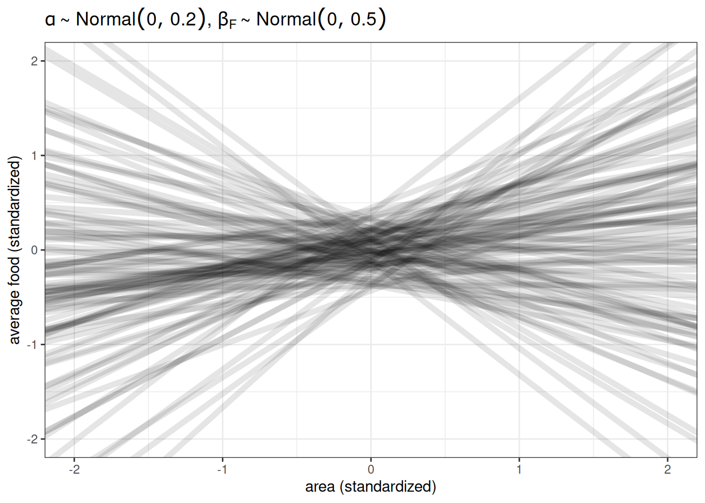
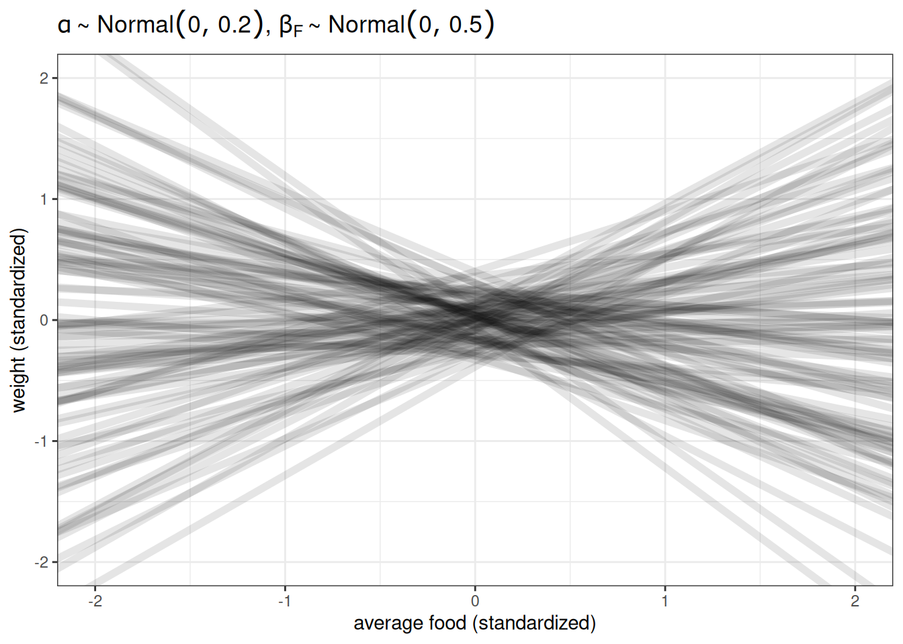
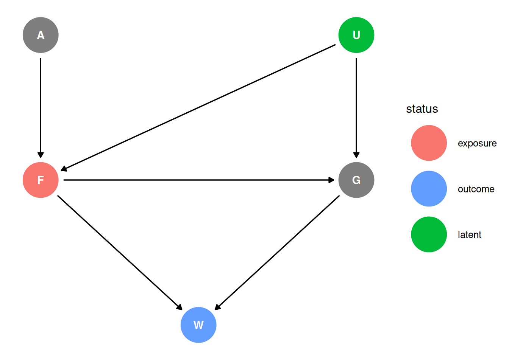
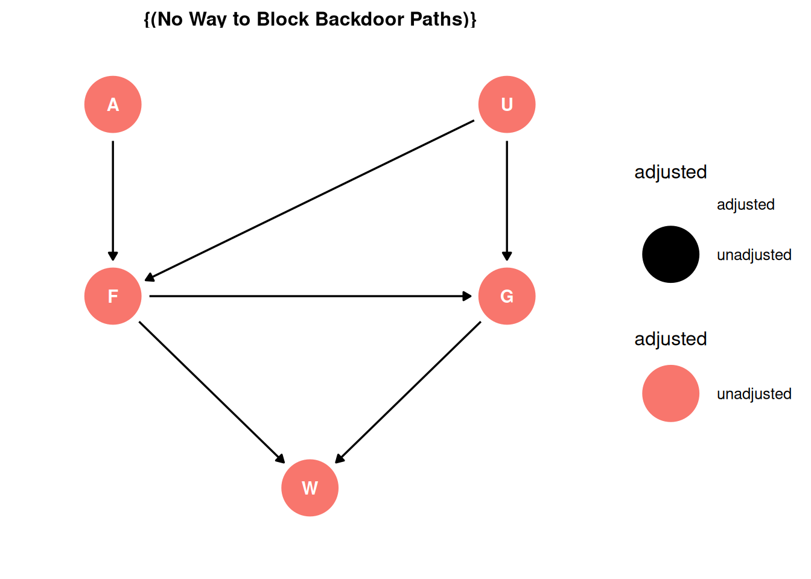

targets::tar_source('R')Homework 03
Setup
Question 1
The first two problems are based on the same data. The data in data(foxes) are 116 foxes from 30 different urban groups in England. These fox groups are like street gangs. Group size (groupsize) varies from 2 to 8 individuals. Each group maintains its own (almost exclusive) urban territory. Some territories are larger than others. The area variable encodes this information. Some territories also have more avgfood than others. And food influences the weight of each fox. Assume [the DAG below], where F is avgfood, G is groupsize, A is area, and W is weight. Use the backdoor criterion and estimate the total causal influence of A on F. What effect would increasing the area of a territory have on the amount of food inside it?
Estimand
What is the total causal influence of A on F? What effect would increasing the area of a territory have on the amount of food inside it?
Scientific model
dag <- dagify(
G ~ F,
F ~ A,
W ~ F + G,
coords = coords,
exposure = 'A',
outcome = 'F'
)
ggdag_status(dag, seed = 2, layout = 'auto') + theme_dag()Backdoor criterion
- Identify all paths connecting treatment to the outcome, regardless of the direction of arrows
A -> F
- Identify paths with arrows entering the treatment (backdoor). These are non-casual paths, because causal paths exit the treatment (frontdoor).
A -> F
- Find adjustment sets that close all backdoor/non-causal paths.
There are no backdoor paths entering the treatment (A). The adjustment set is empty.
ggdag_adjustment_set(dag, effect = 'total') + theme_dag()
Statistical model
\[F_{i} \sim Normal(\mu_{i}, \sigma)\] \[\mu_{i} = \alpha + \beta_{A} A_{i}\]
\[\alpha \sim Normal(0, 0.2)\]
\[\beta_{A} \sim Normal(0, 0.5)\]
\[\sigma \sim Exponential(1)\]
Prior predictive simulation
n <- 100
ggplot() +
geom_abline(aes(intercept = rnorm(n, 0, 0.2),
slope = rnorm(n, 0, 0.5)),
alpha = 0.1, linewidth = 2) +
labs(x = 'area (standardized)',
y = 'average food (standardized)',
title = TeX(r"($\alpha \sim Normal(0, 0.2)$, $\beta_{F} \sim Normal(0, 0.5)$)")) +
xlim(-2, 2) +
ylim(-2, 2)
Analyze the data
?foxes
- group : ID of group
- avgfood : Average available food in group’s territory
- groupsize : Size of each group
- area : Area of group territory
- weight : Body weight of individual fox
data_foxesfunction(scale = FALSE) {
if (!'rethinking' %in% .packages()) {
stop('please load the rethinking package')
}
data(foxes)
DT <- data.table(foxes)
if (scale) {
message('Scaling numeric variables: avgfood, groupsize, area, weight')
DT[, scale_avgfood := scale(avgfood)]
DT[, scale_groupsize := scale(groupsize)]
DT[, scale_area := scale(area)]
DT[, scale_weight := scale(weight)]
}
return(DT)
}# Load data
DT <- tar_read(scaled_foxes)
# Print priors used
tar_read(h03_q01_brms_prior) prior class coef group resp dpar nlpar lb ub source
normal(0, 0.2) Intercept <NA> <NA> user
normal(0, 0.5) b <NA> <NA> user
exponential(1) sigma <NA> <NA> user# Load model
tar_load(h03_q01_brms_sample)
h03_q01_brms_sample Family: gaussian
Links: mu = identity; sigma = identity
Formula: scale_avgfood ~ scale_area
Data: h03_q01_brms_data (Number of observations: 116)
Draws: 4 chains, each with iter = 2000; warmup = 1000; thin = 1;
total post-warmup draws = 4000
Regression Coefficients:
Estimate Est.Error l-95% CI u-95% CI Rhat Bulk_ESS Tail_ESS
Intercept 0.00 0.04 -0.08 0.08 1.00 3699 2926
scale_area 0.88 0.04 0.79 0.96 1.00 3679 2858
Further Distributional Parameters:
Estimate Est.Error l-95% CI u-95% CI Rhat Bulk_ESS Tail_ESS
sigma 0.48 0.03 0.42 0.55 1.00 3407 2766
Draws were sampled using sample(hmc). For each parameter, Bulk_ESS
and Tail_ESS are effective sample size measures, and Rhat is the potential
scale reduction factor on split chains (at convergence, Rhat = 1).# Tidy draws
q01_draws <- h03_q01_brms_sample |>
tidy_draws()
q01_newdata <- data_grid(DT, scale_area = seq_range(scale_area, 20))
q01_epred <- h03_q01_brms_sample |>
epred_draws(q01_newdata)
# Total causal influence of area on avg food
g1 <- ggplot(q01_epred) +
stat_ribbon(aes(
reverse_scale(scale_area, attributes(DT$scale_area)),
reverse_scale(.epred, attributes(DT$scale_avgfood))
), alpha = 0.5) +
scale_fill_grey(start = 0.8, end = 0.2) +
labs(x = 'Area', y = 'Average food')
g2 <- ggplot(q01_draws) +
geom_vline(xintercept = 0, color = 'grey70') +
stat_halfeye(aes(b_scale_area)) +
labs(x = 'Total causal influence of area on average food', y = '') +
xlim(-1.2, 1.2)
g1 / g2Question 2
Infer the total causal effect of adding food F to a territory on the weight W of foxes. Can you calculate the causal effect by simulating an intervention on food?
Estimand
What is the total causal influence of F on W? What effect would increasing the amount of food have on weights?
Scientific model
dag <- dagify(
G ~ F,
F ~ A,
W ~ F + G,
coords = coords,
exposure = 'F',
outcome = 'W'
)
ggdag_status(dag, seed = 2, layout = 'auto') + theme_dag()
Backdoor criterion
- Identify all paths connecting treatment to the outcome, regardless of the direction of arrows
F -> WF -> G -> W
- Identify paths with arrows entering the treatment (backdoor). These are non-casual paths, because causal paths exit the treatment (frontdoor).
F -> WF -> G -> W
- Find adjustment sets that close all backdoor/non-causal paths.
There are no backdoor paths entering the treatment (F). The adjustment set is empty.
ggdag_adjustment_set(dag, effect = 'total') + theme_dag()Statistical model
\[W_{i} \sim Normal(\mu_{i}, \sigma)\] \[\mu_{i} = \alpha + \beta_{F} F_{i}\]
\[\alpha \sim Normal(0, 0.2)\]
\[\beta_{F} \sim Normal(0, 0.5)\]
\[\sigma \sim Exponential(1)\]
Prior predictive simulation
n <- 100
ggplot() +
geom_abline(aes(intercept = rnorm(n, 0, 0.2),
slope = rnorm(n, 0, 0.5)),
alpha = 0.1, linewidth = 2) +
labs(x = 'average food (standardized)',
y = 'weight (standardized)',
title = TeX(r"($\alpha \sim Normal(0, 0.2)$, $\beta_{F} \sim Normal(0, 0.5)$)")) +
xlim(-2, 2) +
ylim(-2, 2)
Analyze the data
# Print priors used
tar_read(h03_q02_brms_prior) prior class coef group resp dpar nlpar lb ub source
normal(0, 0.2) Intercept <NA> <NA> user
normal(0, 0.5) b <NA> <NA> user
exponential(1) sigma <NA> <NA> user# Load model
tar_load(h03_q02_brms_sample)
h03_q02_brms_sample Family: gaussian
Links: mu = identity; sigma = identity
Formula: scale_weight ~ scale_avgfood
Data: h03_q02_brms_data (Number of observations: 116)
Draws: 4 chains, each with iter = 2000; warmup = 1000; thin = 1;
total post-warmup draws = 4000
Regression Coefficients:
Estimate Est.Error l-95% CI u-95% CI Rhat Bulk_ESS Tail_ESS
Intercept -0.00 0.08 -0.16 0.16 1.00 3785 2936
scale_avgfood -0.03 0.09 -0.21 0.16 1.00 3952 2672
Further Distributional Parameters:
Estimate Est.Error l-95% CI u-95% CI Rhat Bulk_ESS Tail_ESS
sigma 1.01 0.07 0.89 1.15 1.00 3807 2932
Draws were sampled using sample(hmc). For each parameter, Bulk_ESS
and Tail_ESS are effective sample size measures, and Rhat is the potential
scale reduction factor on split chains (at convergence, Rhat = 1).# Tidy draws
q02_draws <- h03_q02_brms_sample |>
tidy_draws()
q02_newdata <- data_grid(DT, scale_avgfood = seq_range(scale_avgfood, 20))
q02_epred <- h03_q02_brms_sample |>
epred_draws(q02_newdata)
# Total causal influence of area on avg food
g1 <- ggplot(q02_epred) +
stat_ribbon(aes(
reverse_scale(scale_avgfood, attributes(DT$scale_avgfood)),
reverse_scale(.epred, attributes(DT$scale_weight))
), alpha = 0.5) +
scale_fill_grey(start = 0.8, end = 0.2) +
labs(x = 'Average food', y = 'Weight') +
ylim(2, 6)
g2 <- ggplot(q02_draws) +
geom_vline(xintercept = 0, color = 'grey70') +
stat_halfeye(aes(b_scale_avgfood)) +
labs(x = 'Total causal influence of average food on weight', y = '') +
xlim(-1.2, 1.2)
g1 / g2Question 3
Infer the direct causal effect of adding food F to a territory on the weight W of foxes. In light of your estimates from this problem and the previous one, what do you think is going on with these foxes?
Estimand
What is the direct causal influence of average food on weight?
Scientific model
dag <- dagify(
G ~ F,
F ~ A,
W ~ F + G,
coords = coords,
exposure = 'F',
outcome = 'W'
)
ggdag_status(dag, seed = 2, layout = 'auto') + theme_dag()Backdoor criterion
- Identify all paths connecting treatment to the outcome, regardless of the direction of arrows
F -> WF -> G -> W
- Identify paths with arrows entering the treatment (backdoor). These are non-casual paths, because causal paths exit the treatment (frontdoor).
F -> WF -> G -> W
- Find adjustment sets that close all backdoor/non-causal paths.
There are no backdoor paths entering the treatment (F). However, unlike in Q02, we are interested in the direct effect. Therefore, the adjustment set includes group size.
ggdag_adjustment_set(dag, effect = 'direct') + theme_dag()Statistical model
\[W_{i} \sim Normal(\mu_{i}, \sigma)\] \[\mu_{i} = \alpha + \beta_{F} F_{i} + \beta_{G} G_{i}\]
\[\alpha \sim Normal(0, 0.2)\]
\[\beta_{G} \sim Normal(0, 0.5)\]
\[\beta_{F} \sim Normal(0, 0.5)\]
\[\sigma \sim Exponential(1)\]
Analyze the data
# Print priors used
tar_read(h03_q03_brms_prior) prior class coef group resp dpar nlpar lb ub source
normal(0, 0.2) Intercept <NA> <NA> user
normal(0, 0.5) b <NA> <NA> user
exponential(1) sigma <NA> <NA> user# Load model
tar_load(h03_q03_brms_sample)
h03_q03_brms_sample Family: gaussian
Links: mu = identity; sigma = identity
Formula: scale_weight ~ scale_avgfood + scale_groupsize
Data: h03_q03_brms_data (Number of observations: 116)
Draws: 4 chains, each with iter = 2000; warmup = 1000; thin = 1;
total post-warmup draws = 4000
Regression Coefficients:
Estimate Est.Error l-95% CI u-95% CI Rhat Bulk_ESS Tail_ESS
Intercept 0.00 0.08 -0.16 0.17 1.00 2708 2390
scale_avgfood 0.48 0.18 0.12 0.84 1.00 2063 2176
scale_groupsize -0.57 0.18 -0.92 -0.20 1.00 2073 2276
Further Distributional Parameters:
Estimate Est.Error l-95% CI u-95% CI Rhat Bulk_ESS Tail_ESS
sigma 0.96 0.07 0.85 1.10 1.00 3148 2479
Draws were sampled using sample(hmc). For each parameter, Bulk_ESS
and Tail_ESS are effective sample size measures, and Rhat is the potential
scale reduction factor on split chains (at convergence, Rhat = 1).# Tidy draws
q03_draws <- h03_q03_brms_sample |>
tidy_draws()
# New data, with three levels of group size (L, M, H)
q03_newdata <- data_grid(DT, scale_avgfood = seq_range(scale_avgfood, 20),
scale_groupsize = seq_range(scale_groupsize, 3))
q03_newdata$group_size <- as.factor(q03_newdata$scale_groupsize)
levels(q03_newdata$group_size) <- c('L', 'M', 'H')
q03_epred <- h03_q03_brms_sample |>
epred_draws(q03_newdata)
# Direct causal influence of area on avg food
g1 <- ggplot(q03_epred) +
stat_ribbon(aes(
reverse_scale(scale_avgfood, attributes(DT$scale_avgfood)),
reverse_scale(.epred, attributes(DT$scale_weight))
), alpha = 0.5) +
scale_fill_grey(start = 0.8, end = 0.2) +
labs(
x = 'Average food',
y = 'Weight',
title = paste(
'Direct causal influence of average food on weight,',
'\n',
'at low, medium and high group size'
)
) +
facet_wrap( ~ group_size)
g2 <- ggplot(q03_draws) +
geom_vline(xintercept = 0, color = 'grey70') +
stat_halfeye(aes(b_scale_avgfood)) +
labs(x = TeX(r"($\beta_{F}$)"), y = '') +
xlim(-1.2, 1.2)
g1 / g2Holding group size constant, we see a positive association between average food and weight. We can expect that fox in larger groups have access to more available food, they also have to share with more conspecifics.
Question 4
Suppose there is an unobserved confound that influences F and G, like [below]. Assuming the DAG above is correct, again estimate both the total and direct causal effects of F on W. What impact does the unobserved confound have?
Estimand
What is the direct and total effect of F on W? What impact does the unobserved confound U have?
Scientific model
dag <- dagify(
G ~ F + U,
F ~ A + U,
W ~ F + G,
coords = coords,
exposure = 'F',
outcome = 'W',
latent = 'U'
)
ggdag_status(dag, seed = 2, layout = 'auto') + theme_dag()
Backdoor criterion
- Identify all paths connecting treatment to the outcome, regardless of the direction of arrows
F -> WF -> G -> WF <- U -> G -> W
- Identify paths with arrows entering the treatment (backdoor). These are non-casual paths, because causal paths exit the treatment (frontdoor).
F -> WF -> G -> WF <- U -> G -> W
- Find adjustment sets that close all backdoor/non-causal paths.
There is one backdoor path entering the treatment (F) through the unobserved confound U. The total causal effect cannot be estimate because of the unobserved confound introducing a backdoor path into the treatment that cannot be controlled for. The direct causal effect can be estimated as in Q03 by including G in the adjustment set.
ggdag_adjustment_set(dag, effect = 'total') + theme_dag()Warning in dag_adjustment_sets(., exposure = exposure, outcome = outcome, : Failed to close backdoor paths. Common reasons include:
* graph is not acyclic
* backdoor paths are not closeable with given set of variables
* necessary variables are unmeasured (latent)
ggdag_adjustment_set(dag, effect = 'direct') + theme_dag()